Code
load("CHD.RData")
attach(chd.data)
knitr::kable(list(chd.data[sample(1:100, 10),2:3],
chd.data[sample(1:100, 10),2:3]),
row.names = F,
caption = "The CHD example")
|
|
The topic we address in this chapter is logistic regression. Like the previous two chapters, logistic regression is an extension of multiple linear regression to situations in which the “standard” model does not directly apply. This time, the extension is to binary outcome variables.
There are many situations in which the outcome of interest can be thought of as a binary or “yes / no” or “true / false” outcome:
Just like with linear regression, we often we want to relate these types of binary variables to predictors, such as medical history, family background, personal characteristics, etc. That is what logistic regression does.
The main theme of this chapter is also an extension of the previous two chapters. We have seen a general strategy for how to deal with data that do not “fit” the assumptions of linear regression:
We will see this basic approach again in this chapter. In fact, its kind of a general-purpose hack for quantitative research – when you are faced with a problem you don’t know how to deal with, turn it into something you do know how to deal with. Certainly this is not the most creative approach, but it has the advantage of letting us “port over” many of the tools we have developed in one context (regression with a continuous outcome) into a new context (regression with a binary outcome).
In terms of statistical modeling, the move to binary outcome variables is a pretty big deal. Everything we have done up until now has focused on OLS regression, using the same basic principles we discussed in Chapters Chapter 2 and Chapter 3. However, logistic regression takes us into the wider framework of generalized linear models (GLMs), which are estimated using maximum likelihood (ML) rather than OLS. Thus we will need to start at the “ground floor” to build up our knowledge of logistic regression, which then provides a stepping stone to GLMs, which can additionally handle other types of outcome variables (e.g., count data, ordered categorical data).
Since we are starting with a new modeling approach, let’s kick things off with a new example.
As a working example, we will use data contained in the file CHD.RData to explore the relationship between age in years (“age”) and evidence (absence or presence) of coronary heart disease (“chd”). The data set contains 100 cases. Respondents’ ages range from 20 to 69, while evidence of CHD is coded 0 when it is absent and 1 when it is present. A sample of 20 cases is shown below. (Source: Applied Logistic Regression by David W. Hosmer and Stanley Lemeshow, 1989, John Wiley and Sons.)
load("CHD.RData")
attach(chd.data)
knitr::kable(list(chd.data[sample(1:100, 10),2:3],
chd.data[sample(1:100, 10),2:3]),
row.names = F,
caption = "The CHD example")
|
|
If we regress CHD on age using linear regression, this is referred to as the “linear probability model.” The diagnostic plots and summary output are below:
Call:
lm(formula = chd ~ age, data = chd.data)
Residuals:
Min 1Q Median 3Q Max
-0.85793 -0.33992 -0.07274 0.31656 0.99269
Coefficients:
Estimate Std. Error t value Pr(>|t|)
(Intercept) -0.537960 0.168809 -3.187 0.00193 **
age 0.021811 0.003679 5.929 4.57e-08 ***
---
Signif. codes: 0 '***' 0.001 '**' 0.01 '*' 0.05 '.' 0.1 ' ' 1
Residual standard error: 0.429 on 98 degrees of freedom
Multiple R-squared: 0.264, Adjusted R-squared: 0.2565
F-statistic: 35.15 on 1 and 98 DF, p-value: 4.575e-08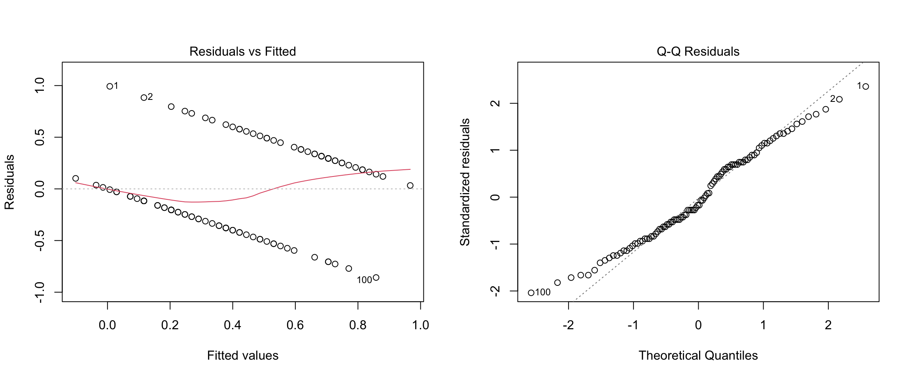
Before moving on, please take a moment to write down you conclusions (and rationale) about whether the assumptions of linear regression are met for these data.
I’ll note that researchers who have a strong preference for OLS methods (AKA economists) often approach binary outcomes using the linear probability model. As we can see, this approach violates all of the assumptions of linear regression, can lead to predicted probabilities outside of the range [0,1], produces incorrect standard errors for model parameters (need to use HC standard errors), and is, in a word, wrong. Yet, despite all this, it works pretty well in some situations and has the benefit of being easier to interpret than logistic regression. We will consider the situations in which the linear probability model is “close enough” at the end of the next section.
The general game plan for dealing with a binary outcome is to transform it into a different variable that is easier to work with, run the analysis, and then “reverse-transform” the model coefficients so that they are interpretable in terms of the original binary variable. This strategy should sound familiar from Chapter 8 – it’s the same overall approach we used for log-linear regression. Also in common with Chapter 8, we are going to use logs and exponents as the main workhorse for this approach (that is where the “log” in logistic comes from).
However, the overall strategy for transforming the \(Y\) variable in logistic regression is a bit more complicated than the log-linear model. So, it is helpful to start wit an overall “roadmap”.
Step 1 (from binary to probability). First, we are going to work with probabilities rather than the original binary variable. In terms of our example, we are going to shift focus from whether or not a person has CHD to the probability of a person having CHD.
Step 2 (from probability to logistic). The logistic function is widely-used model for probabilities. In terms of our example, we are going to use the logistic function to relate the probability of a person having CHD to their age.
Step 3 (from logistic to logit). The logistic function has a nice interpretation, but it is not a linear function of age. So, we are going to transform it into something that is linear in age, which will let us “port over” a lot of what we have learned about linear models. Actually, the reason we choose the logistic function as a model of probability is because this transform is relatively straightforward and can be “undone” afterwards when interpreting the model coefficients, just like with log-linear regression. The transformation two steps:
Step3A (probability to odds). First we transform the probability of having CHD into the odds of having CHD. If \(p\) denotes probability then odds are just \(p / (1-p)\). We will spend a while talking about how to interpret odds.
Step 3B (odds to logit). Then we take the log of the odds, which is called the logit. The logit turns out to be a linear function of age, so we can model the relationship between age and the logit of CHD in a way that is very similar to regular linear regression.
So, that’s the overall approach to dealing with a binary variable in logistic regression. Clear as mud, right? Don’t worry, we will walk through each step in the following subsections. If you find yourself getting lost in the details, it can be helpful to refer back to this overall strategy. In short, the overall game plan is:
\[ \text{binary outcome} \rightarrow \text{probability} \rightarrow \text{logistic} \rightarrow \text{logit (log odds) }\]
Once we have all these concepts in play, we can start doing logistic regression.
The following table presents the example data in terms of the proportion of cases with CHD, broken down by age groups. The first column shows the age groups, the second shows the number of cases without CHD, the third shows the number of cases with CHD, and the last column shows the proportion of cases with CHD.
knitr::include_graphics("files/images/props.png")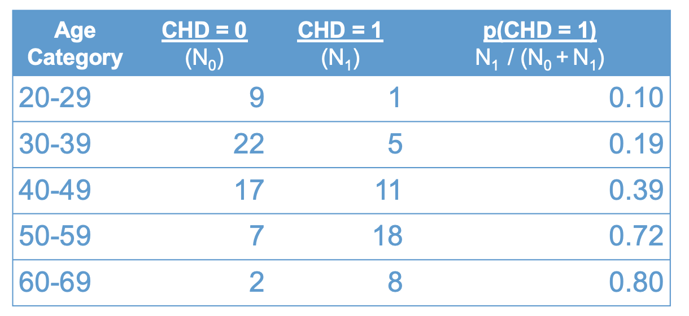
Recall that a proportion is computed as the number of cases of interest over the total number of cases. In terms of the table above:
\[ p(CHD = 1) = \frac{ N_1}{N_0 + N_1 } \tag{10.1}\]
were \(N_1\) denotes the number of cases with CDH, and \(N_0\) is the number of cases without.
The number \(p(CHD = 1)\) can be interpreted in many ways, which leads to a lot of terminology here.
You might hear all of these terms (i.e., proportion, percentage, rate, mean, probability) used in connection with logistic regression. But, they are all just different ways of interpreting the rightmost column of Figure 10.2. I will try to make a point of using all of these terms so you get used to interpreting them in this context :)
Another concept that will be useful for interpreting our data is odds. Odds are closely related to, but not the same as, probability. The figure below adds the odds of having CHD to Figure Figure 10.2.
knitr::include_graphics("files/images/odds.png")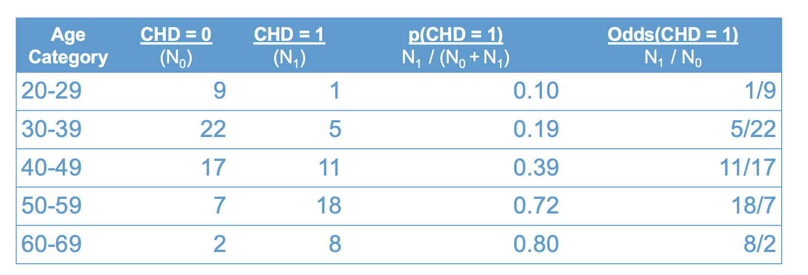
As shown in the table, the odds are also a function of the two sample sizes, \(N_1\) and \(N_0\):
\[\text{odds}(CHD = 1) = \frac{N_1}{N_0}. \tag{10.2}\]
Let’s take a moment to compare the interpretation of probability versus odds.
The first row of the table tells us that the probability of having CHD in your 20’s is “1 in 10”. Loosely, this means that for every 10 people in their 20s, one of them will have CHD.
By contrast, the odds of having CHD in your twenties is “1 to 9”. Roughly, this means that for every person in their twenties with CHD, there are nine without CHD.
Clearly, probabilities and odds are just two different ways of packaging the same information. The following equations shows the relation between odds and probability (these are derived from Equations Equation 10.1 and Equation 10.2 using algebra)
\[ \begin{align} p(CHD = 1) & = \frac{\text{odds}(CHD = 1)}{1 + \text{odds}(CHD = 1)} \\ \\ \text{odds}(CHD = 1) & = \frac{p(CHD = 1)}{1 - p(CHD = 1)} \end{align} \tag{10.3}\]
We will see these relations again shortly. But, before moving on, let’s get some more practice interpreting odds and probabilities using the data in Figure 10.3. Please write down your answers to the following questions and be prepared to share them in class. For each question provide a verbal interpretation of the numerical answer (e.g, odds of 2 to 1 means that for every two people with a trait, there is one without.)
The answers hidden below (use the Code button to reveal), but you won’t learn anything if you don’t try the question yourself first!
# 1. .39, so about 40% of people
# 2. 11/17, so for 11 people with CHD there are 17 without
# 3. 1 - .72 = .28, so about 28% of people
# 4. (18/7)^-1 = 7/18, so 7 out ever 18 people
# 5. .39 / .19 ~= 2, so the probability of having CHD in your 40s is about 2 times higher than the probability of having CHD in your 30s. This is called a relative risk, or a risk ratio.
#6. (11/17)/(5/22) ~= 2.8, so the odds of having CHD in your 40s is about 2.8 times higher than the odds of having CHD in your 30s. This is called an odds ratio. On thing you may have noted about the CHD data is that the proportion of cases with CHD increases with age. This relationship is shown visually in Figure 10.4.
# Sample proportions
prop <- tapply(chd, catage, mean)
# Age categories
years <- unique(catage)*10
# Plot
plot(years,
prop,
type = "l",
lwd = 2,
col = "#4B9CD3",
ylab = "p(CHD =1)",
xlab = "Age categories")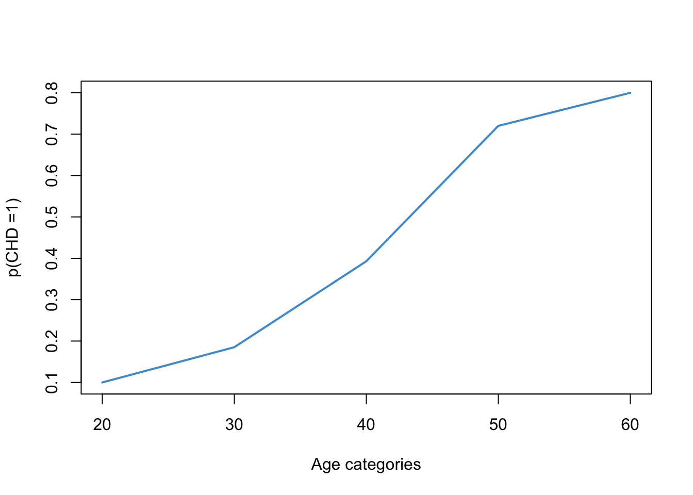
Looking at the plot, we might suspect that the relationship between the probability of CHD and age is non-linear. In particular, we know that probabilities cannot take on values outside of the range \((0, 1)\), so the relationship is going to have to “flatten out” in the tails. For example, even if you are a baby, your probability of having CHD cannot be less than 0. And, even if you are centenarian, the probability can’t be great than 1.
Based on this reasoning, we know that the relationship between age and the rate of CHD should take on a sort of “S-shaped” curve or “sigmoid”. This S-shape is hinted at in Figure 10.4 but is not very clear. Some clearer examples are shown in Figure 10.5.
# Logistic function
logistic <- function(x, a, b){exp(a*x + b) / (1 + exp(a*x + b))}
# Generate data
x <- seq(-5, 5, by = .1)
# Plots
plot(x, logistic(x, 1, 0),
type = "l",
lwd = 2,
col = 2,
ylab = "logistic")
points(x, logistic(x, .75, -1.5),
type = "l",
lwd = 2,
col = 3,
ylab = "logistic")
points(x, logistic(x, 1.5,- 1),
type = "l",
lwd = 2,
col = 4,
ylab = "logistic")
points(x, logistic(x, 3, 2),
type = "l",
lwd = 2,
col = 5,
ylab = "logistic")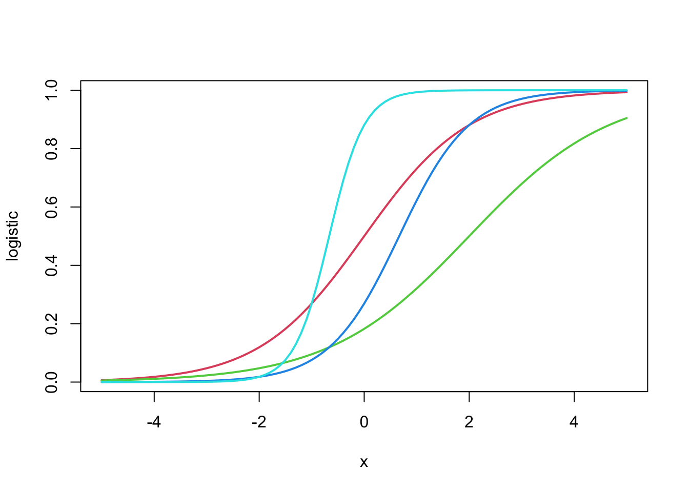
The mathematical equation used to create these S-shaped curves is called the logistic function, the namesake of logistic regression. All you need to take-away from Figure 10.5 is that there is mathematical function that produces the kind of relations we are expecting between age (continuous) the the probability of having CHD (bounded to the interval \((0, 1)\)).
Returning to our example, we can see in Figure 10.6 that the logistic function provides a reasonable approximation for the relationship between the rate of CHD and age.
par(mfrow = c(1, 2))
plot(years, prop, type = "l", lwd = 2, col = "#4B9CD3", ylab = "p(CHD =1)", xlab = "Age categories")
plot(20:60, logistic(20:60, .12, -5.2), col = "#4B9CD3", ylab = "logistic", xlab = "Age in years")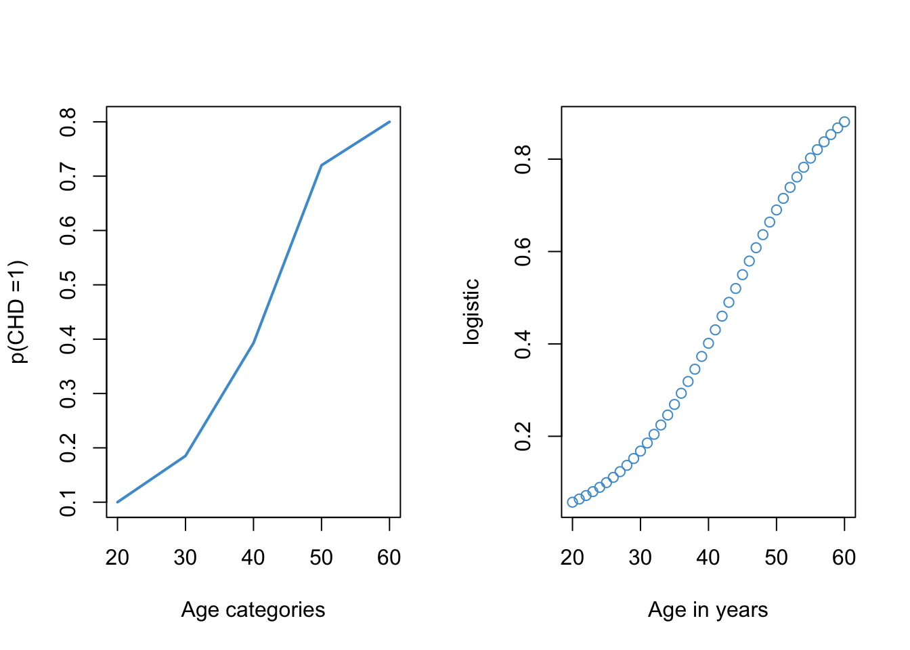
One important thing to notice about Figure 10.6 is that the plot on the left required re-coding age into a categorical variable and computing the proportion of cases with CHD in each age category (see Figure 10.2). However, the logistic plot on the right did not require categorizing age. So, one advantage of using the logistic function is that we can model the probability of CHD as a function of age “directly”, without having to categorize our predictor variables.
The take home message of this section is that the logistic function is a nice way to model how a proportion depends on a continuous variable like age. Next, we’ll talk about the math of the logistic function in a bit more detail.
The formula for the logistic function (i.e., the function that produced the curves in Figure 10.5 is
\[p = \frac{\exp(x)}{1 + \exp(x)}. \tag{10.4}\]
This function maps the variable \(x\) onto the interval \((0, 1)\). In Figure 10.6 we saw that the logistic function can provide a nice model for probabilities. We also saw that the logistic function is non-linear function of \(x\) (i.e., it is sigmoidal or S-shaped).
However, a nice thing about the logistic function is that we can transform it into a linear function of \(x\). Since we already know how to deal with linear functions (that is what this whole course has been about!), transforming the logistic into a linear function of \(x\) will let us port over a lot of what we know about linear regression to situations in which the outcome variable is binary. (In fact, the real motivation for choosing the logistic function in the first place, rather than some other S-shaped curve.)
So, let’s see how to get from our S-shaped logistic function of \(x\) to a linear function of \(x\). Algebra with Equation 10.4 shows that we can re-express the logistic function in terms of the odds:
\[\frac{p}{1- p} = \exp(x). \tag{10.5}\]
Note that Equations Equation 10.4 and Equation 10.5 directly parallel the two expressions in Equation Equation 10.3. The only difference is that, in the logistic model, the odds are represented as an exponential function of the variable \(x\), which is what Equation Equation 10.5 is telling us.
In order to turn Equation 10.5 into a linear function of \(x\), all we need to do is get rid of the exponent. Do you remember how?? That’s right, just take the log (see Section 8.1):
\[ \log\left(\frac{p}{1- p}\right) = x. \tag{10.6}\]
This equation is telling us that the log of the odds is linear in \(x\). The log-odds is also called the logit, which is short for “logistic unit.”
The relationship among the logistic, odds, and logit are summarized in Figure 10.7.
knitr::include_graphics("files/images/logit.png")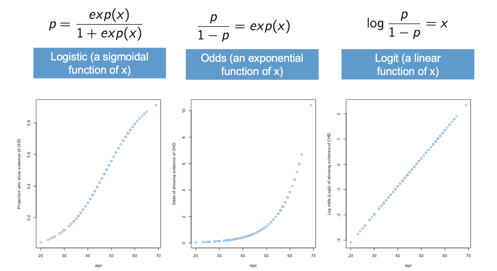
The left-hand panel shows the logistic function. This is our “intuitive-but-nonlinear” model for probabilities. In terms of our example, this panel is saying that the probability of having CHD is a logistic or S-shaped function of age.
The middle panel shows that the odds are an exponential function of \(x\). In terms of our example, this means that the odds of having CHD are an exponential function of age. This is the main assumption of the logistic model, and we will revisit this assumption again when we get to ?sec-assumption-checking-10.
Finally, the right-hand panel shows the “not-really-intuitive-but-definitely-linear” model for the logit. In terms of our example, the logit of having CHD is a linear function of age.
The next section discusses how to interpret the logit by reverse-transforming it back to the odds and probabilities. The situation is a lot like log-linear regression (Chapter 9).
Before moving, lets nail down the relation between probability, odds, and logits. Figure 10.8) presents the relationship in tabular form.
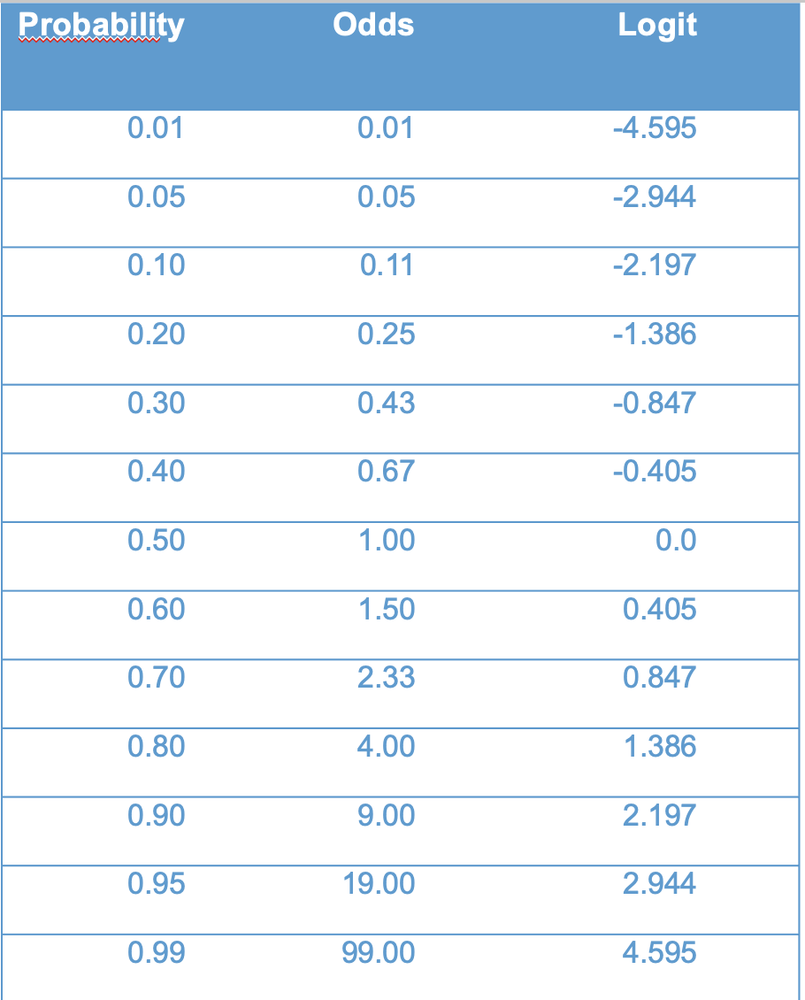
I will asks some questions along the following lines in class.
The logit is our workhorse for logistic regression. In Section 10.3, we will replace the variable \(x\) with a simple regression model \(a + bX\) to get simple logistic regression. In ?sec-multiple-10 we will extend simple logistic regression to multiple logistic regression, just like we did for multiple linear regression.
Although the logit is the workhorse, we generally don’t want to work with the logit when it comes time to interpret the results. The situation here is a lot like log-linear regression (Chapter 9). In log-linear regression, we treated \(\log(Y)\) as a linear function of our predictor variable(s). However, we didn’t want to interpret the model in terms of \(\log(Y)\), because, well, who thinks in log units? Instead we wanted an interpretation in terms of the original outcome, \(Y\).
The same situation applies here. You may have already noted that the relationship between the logit (i.e., \(\log(\text{odds})\)) and \(\text{odds}\) in logistic regression is the same as the relationship between \(\log(Y)\) and \(Y\) in log-linear regression. The parallel between the two model is as follows:
In the log-linear model we interpreted a \(b\) unit increase in \(\log(Y)\) in terms of an \((\exp(b) - 1) \times 100\%\) change in \(Y\) (see Section (ref-interpretation-8?))).
In logistic regression we will interpret a \(b\) unit increase in \(\text{logit}(Y)\) in terms of an \((\exp(b) - 1) \times 100\%\) times change in \(\text{odds}(Y)\).
So, while we use the logit function for modeling, we often use the odds for interpretation. One subtle difference to be aware of is that, in logistic regression, we usually report results in terms of relative magnitude (called the odds ratio) rather than relative change, although relative change is often used for verbal reporting. We will see examples in the next section.
Some authors have argued that people don’t really know how to interpret odds properly. These authors suggest that we interpret the logistic model in terms of probabilities, rather than odds. We will discuss how to do this as well.
At this point we have covered the overall logic of how we can model a binary outcome variable like CHD in terms of the logistic function. The overall situation is very similar to, but a bit more complicated than, log-linear regression. The main take aways are
We use the logit (log-odds) for statistical analysis, because it results in a linear function, and we already know how to deal with linear functions.
We use the odds for interpretation, because the logistic model leads to proportional change in the odds, in the same way that the log-linear model leads to proportional change in \(Y\).
We can also use probabilities for interpretation, but, since the logistic model implies that probabilities are non-linear (sigmoidal), things can get a bit complicated with this approach.
In this section we move onto logistic regression proper. For the CHD example, the model we are interested in is
\[\text{logit}(CHD) = a + b (\text{age}). \]
We are going to skip a few steps and go right into the interpretation of the R output. Once we know how to interpret the output, we will loop back to discuss details of estimation and inference in the following sections.
The summary R output for the example is below. The focus for now is just the interpretation of the values under the “Estimate” heading.
mod2 <- glm(chd ~ age, family = binomial, data = chd.data)
summary(mod2)
Call:
glm(formula = chd ~ age, family = binomial, data = chd.data)
Coefficients:
Estimate Std. Error z value Pr(>|z|)
(Intercept) -5.30945 1.13365 -4.683 2.82e-06 ***
age 0.11092 0.02406 4.610 4.02e-06 ***
---
Signif. codes: 0 '***' 0.001 '**' 0.01 '*' 0.05 '.' 0.1 ' ' 1
(Dispersion parameter for binomial family taken to be 1)
Null deviance: 136.66 on 99 degrees of freedom
Residual deviance: 107.35 on 98 degrees of freedom
AIC: 111.35
Number of Fisher Scoring iterations: 4Plugging the estimates into our logit model, we have the following equation
\[ \text{logit}(CHD) = -5.31 + .11 (\text{age}). \]
The “literal” interpretation of this equation is:
While this interpretation is perfectly correct, most applied audiences are not going to know how to interpret \(\text{logit}(CHD)\). So, instead, we often work with the odds and probabilities, as outlined in the next few sections.
The logistic regression model implies
\[\frac{\text{odds} (X+1)}{\text{odds}(X)} = \exp(b) \tag{10.7}\]
where \(\text{odds}(X)\) are the odds of the outcome associated with a given value of the predictor \(X\). Equation Equation 10.7 is called the odds ratio (abbreviated OR) associated with a one-unit increase in \(X\).
If you refer back to section Section 8.5.5, you can see we are using the exact same approach from log-linear regression, but in Equation 10.7 we interpret the regression coefficient in term of the odds that \(Y = 1\), rather than the \(Y\) variable itself.
For the CHD example, the OR is:
\[\exp(b) = \exp(.11) = 1.1163 \]
This means that each additional year of age is associated with an OR of 1.11. For example, the odds for someone aged 21 having CHD is 1.11 time larger (relative magnitude) that someone aged 20. The really useful thing about the OR is that it is constant over values of the predictor. So, regardless of whether we are comparing a 21-year-old to a 20-year-old, or 41-year-old to a 40-year-old, the OR is the same.
Just like the log-linear model, we can also report the results of our analysis in terms of relative change rather than relative magnitude. In particular, the percent increase in the odds of CHD associated with each additional year of age is:
\[(\exp(.11) - 1) \times 100 = 11.63\% \]
This means that the predicted odds of CHD increase 11.63% for each additional year of age.
Whether you use relative magnitude (i.e., the odds ratio) or relative change (i.e., percent change in odds) to report the results of logistic regression is up to you. In many fields, it is conventional to reports the odds ratios in tables, but to use percent change when writing about results in a sentence.
Before moving, please practice your interpretation of the OR in simple logistic regression using the following examples
Answers hidden below (use Code button), but please try out the questions yourself first!
# 1. OR = exp(0) = 1 and percent change equals (exp(0) - 1) X 100 = 0%. So, "no relationship" means OR = 1.
# 2. OR = exp(.25) = 1.2840 and percent change equals (exp(.25) - 1) X 100 = 28.40% increase
# 3. OR = exp(-.025) = 0.9753 and percent change for one unit equals (exp(-.025) - 1) X 100 = (-.02469 X 100 -2.469%. For 10 units of change, multiply by 10, which gives 24.69% decrease (negative sign is decrease).
# 4. (exp(b) - 1) X 100 = 100 --> exp(b) = 2 --> b = log(2) = .6931Another way to interpret the logistic model is in terms of the predicted probabilities, which are plotted below for the example data.
visreg::visreg(mod2, xvar = "age", scale = "response")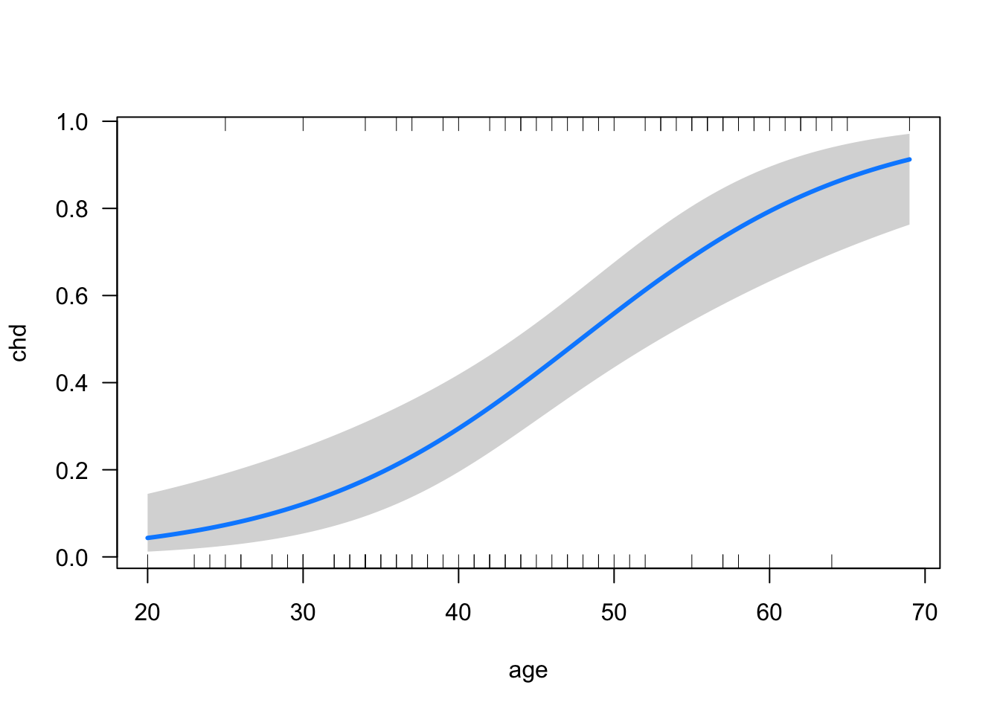
Using this plot, we can read off the probability of CHD for any given age. We might also want to report the probability of CHD for two or more chosen ages, which is an example of the MERV approach to marginal effects (see Section 5.4):
library(emmeans)
emmeans(mod2, specs = "age", at = list(age = c(20, 40)), type = "response") age prob SE df asymp.LCL asymp.UCL
20 0.0435 0.0279 Inf 0.0121 0.145
40 0.2947 0.0578 Inf 0.1951 0.419
Confidence level used: 0.95
Intervals are back-transformed from the logit scale The ratio of two probabilities is often called the risk ratio or the relative risk. So, we could also say that the risk ratio of CHD for someone who in their 40s as compared to someone who is 20 is .2947 / .0435 = 6.77. Otherwise stated, the risk of having CHD in you are 40s is almost 7 times higher than in your 20s (relative magnitude).
Another interpretation of logistic regression is to report the value of \(X\) at which the \(\text{odds}\) of the outcome are equal to 1 (equivalently, the probability of the outcome is equal to .5). This idea is illustrated in Figure 10.10.
x <- data.frame(age = 20:70)
prob <- predict(mod2, newdata = x, type = "response")
plot(x$age, prob, xlab = "age", ylab = "p(CHD)", type = "l", col = "#4B9CD3")
segments(x0 = 15, y0 = .5, x1 = 48, y1 = .5, lty = 2, lwd = 2)
segments(x0 = 48, y0 = 0, x1 = 48, y1 = .5, lty = 3, lwd = 2)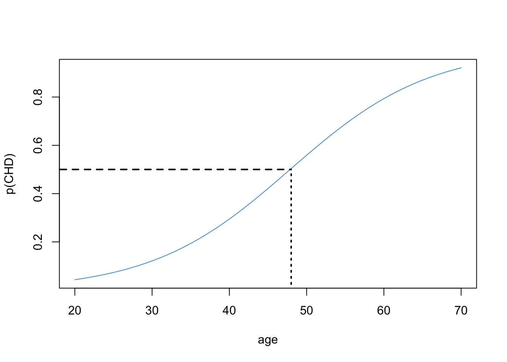
First we find the probability of .5 on the \(Y\) axis and then follow the horizontal dashed line to the logistic curve. Then we follow the vertical dashed line down to the value of \(X\). This gives use the age at which the probability of CHD is “50-50”. Based on the plot we can say that, after your 48th birthday, your chances of having CHD are above 50%.
The math behind this interpretation is below. Since
\[\log(.5/.5) = \log(1) = 0 \]
we can solve
\[ a + b(\text{age}) = 0 \]
to find the age at which someone has equal odds of CHD, leading to
\[\text{age} = - a/b. \]
For the example data
\[ \text{age} = - a/b = - (-5.31) / .11 = 48.27, \]
which confirms the conclusion we made looking at the plot.
In summary, another way of interpreting regression coefficients in simple logistic regression is to compute \(-a / b\), which gives the value of \(X\) at which \(p(Y = 1) = .5\).
Yet another interpretation is in terms of the slope of the straight line (tangent) through the point \(p(CHD = 1) = .5\). The slope of this line describes the rate of change in the probability of CHD for people who are “close to” the age of equal odds (48 years in our example). The tangent line for our example is shown in Figure 10.11.
x <- data.frame(age = 20:70)
prob <- predict(mod2, newdata = x, type = "response")
plot(x$age, prob, xlab = "age", ylab = "p(CHD)", type = "l", col = "#4B9CD3")
abline(a = -.815, b = .11/4, lty = 2, lwd = 2)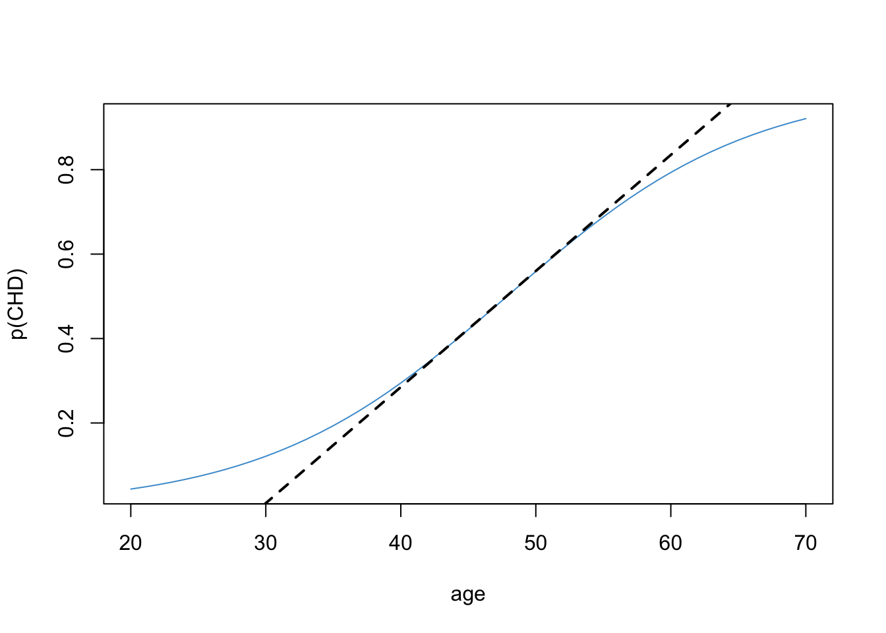
It turns out that the slope of the tangent line is equal to exactly \(b/4\). The derivation requires calculus and is omitted (ask in class if you are interested!). For the example data \(b / 4 = .11 / 4 = .0275\). So, for every additional year, the predicted probability of CHD increases by .0275. Keep in mind, this interpretation only applies to people who “around” the age of equal odds (48 years old in this example). Looking at the plot, we can see that this approximation is pretty good for people between the ages of 40 and 60.
Notice that in our example, the logistic function is roughly linear for probabilities in the range \([.2, .8]\). As mentioned in the introduction of this chapter, this is the situation in which using linear regression with a binary outcome (i.e., the linear probability model) works “well enough”. Also note that the regression coefficient from the linear probability model in Section 10.1 (\(b_{OLS} = .0218\)) is in the ballpark of the coefficient computed above (\(b_{logistic} / 4 = .0275\)). These numbers are both describing how the probability of CHD is related to a person’s age.
The logistic model also provides us with a way “diagnosing” whether the linear probability model is a good approximation. As noted, the logistic function is roughly linear for probabilities in the range \([.2, .8]\). If we ran a linear regression on CHD and none of the fitted / predicted values are outside the range \([.2, .8]\), we would be in the situation where we might prefer to use linear regression (despite it being technically wrong). Referring back to residual vs. plotted in Section 10.1, we can see that the predicted values were outside of this range, so the logistic model is the better way to approach for this example.
The simple logistic regression model
\[ \text{logit}(CHD) = a + b (\text{age}) \]
has the following interpretations.
emmeans in R).Please write down the numerical values of each of the above summaries for the CHD example (except the predicted probability plot). You can select any values of age to report the predicted probabilities and risk ratios, and you can “eye ball” the probabilities using Figure 10.9.
Answers are hidden below (use the Code button), but please try them yourself first.
# Logit:
# predicted logit when age = 0: a = -5.31;
# expected increase in logit when age increases by one year: b = .11
# Odds:
# OR = exp(b) = exp(.11) = 1.1163
# % change in Odds = (exp(b) - 1) X 100 = 11.63%
# Probability
# In the example, used risk for Age = 40 relative to Age = 20: .2947/.0435 = 6.77
# "50-50" age: -a/b = 5.31 / .11 = 48.27
# Rate of change at "50-50" age: b/4 = .11/4 = .0275This section collects the questions asked in this chapter. The lessons for this chapter will focus on discussing these questions and then working on the exercises in ?sec-exercises-10. The lessons will not be a lecture that reviews all of the material in the chapter! So, if you haven’t written down / thought about the answers to these questions before class, the lesson will not be very useful for you. Please engage with each question by writing down one or more answers, asking clarifying questions about related material, posing follow up questions, etc.
?sec-CHD-example-10

Call:
lm(formula = chd ~ age, data = chd.data)
Residuals:
Min 1Q Median 3Q Max
-0.85793 -0.33992 -0.07274 0.31656 0.99269
Coefficients:
Estimate Std. Error t value Pr(>|t|)
(Intercept) -0.537960 0.168809 -3.187 0.00193 **
age 0.021811 0.003679 5.929 4.57e-08 ***
---
Signif. codes: 0 '***' 0.001 '**' 0.01 '*' 0.05 '.' 0.1 ' ' 1
Residual standard error: 0.429 on 98 degrees of freedom
Multiple R-squared: 0.264, Adjusted R-squared: 0.2565
F-statistic: 35.15 on 1 and 98 DF, p-value: 4.575e-08knitr::include_graphics("files/images/odds.png")Using the Table above, please write down your answers to the following questions and be prepared to share them in class. For each question provide a verbal interpretation of the numerical answer (e.g, odds of 2 to 1 means that for every two people with a trait, there is one without.)
Using the Table above, please answer the following questions
\[ \text{logit}(CHD) = -5.31 + .11 (\text{age}). \]